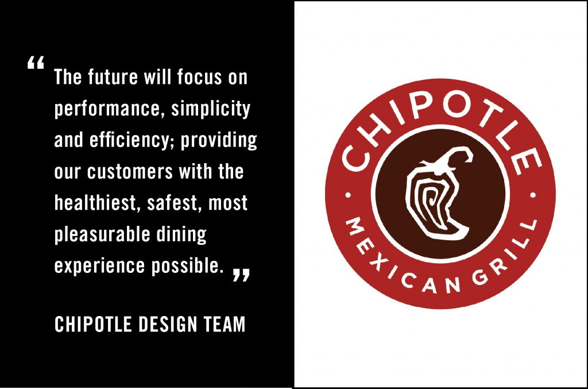
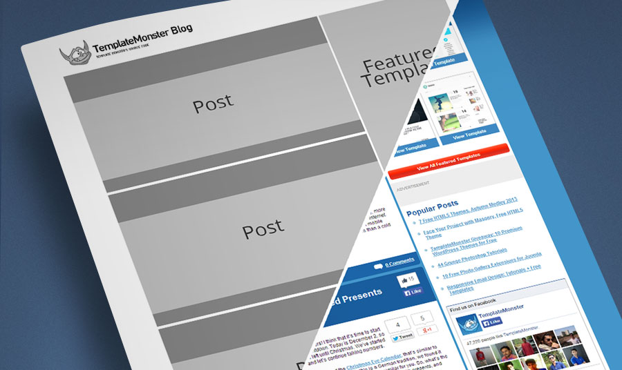
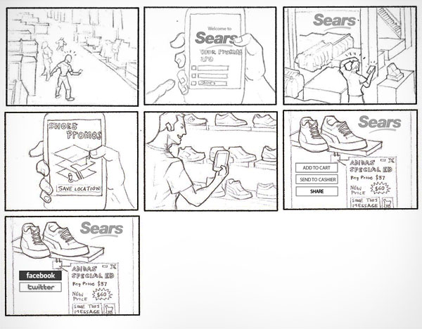

Intro to User Experience
10/8/14
Intro to User Experience
10/8/14
Welcome
Girl Develop It is here to provide affordable and accessible programs to learn software through mentorship and hands-on instruction.
Some "rules"
- We are here for you!
- Every question is important
- Help each other
- Have fun!
Introduction
We're here to help!
- Twitter: @ramoved
- Email: ramlamahmood@gmail.com
- Twitter: @afreenhabib
- Email: afreen.z.habib@gmail.com
Ramla Mahmood, Designer Vox Media
Afreen Habib, UX Designer Apollo Matrix
Agenda
- What is User Experience?
- The Anatomy of User Experience
- Getting Started
- Testing methods (exercise)
Getting started
What is User Experience?UX vs UI Differences
| User Experience (UX) | User Interface (UI) |
|---|---|
| Strategy | Visual |
| Research Basis | Implentation |
| Function | Form |
| Analytical | Creative |
| Usability | Usability |
A Successful UX Designer will accomplish...
- Advocacy and understanding.
- Proposing solutions and actionable plans.
- Facilitating communication.
A bit of history

- 1900s- make human labor more efficient.
- 1950s- Toyota's 'respect for people' philosophy.
- 1970s- Xerox PARC.
Read more: Where UX Comes from by Leah Buley
Don Norman, the first UX Architect

- 1990s- Apple hired a cognitive scientist named Don Norman.
- He was the first person to have the title 'UX Architect'.
- One of the Godfathers of UX
Let's talk about Chipotle!

Redesigning the food experience.
Business Model as UX
A bit of theory

3. The anatomy of a design
- Information Architecture & Content Strategy
- Interaction Design
- Visual Design
Wireframe to Mockup
Information Architecture
- Content Blocks
- Navigation
- Action Items
- Placeholders
Interaction Design
- Clickable
- Scrollable
- Action words, like 'Submit'
- Typeable (inputs)
Separating Visual Design
- Pictures
- Colors
- Typography
- Overall look and feel
4. Finding out who your users are
Before there can be design, there must be data.
What you need to know
- Demographics
- Technological Capabilities
- Common contexts
Tools to try
- Google analytics
- Piwik
- Crazy Egg
- Kiss Metrics
- Loopfuse
- Spring Metrics
- Flurry
5. Designing a Test

Types of testing
- Eye tracking
- A/B Testing
- Remote Testing
- Case Studies
- Questionnaires/Interviews
Big Test vs Small Test
| Small Testing | Big Testing |
|---|---|
| Low cost | Expensive |
| Small sample | Large sample |
| Doesn't represent population | Robust |
| Not in depth | Comprehensive |
Naturalistic vs Task-oriented
- There is no one right way for every situation.
- Naturalistic- can be better for fishing for information in general.
- Task-focused- can be better for answering very specific questions.
In-person vs Remote
- In-person moderated- sitting with the user, interactive.
- In-person unmoderated- watching through a mirror, or recording and viewing later.
- Remote moderated- an interactive session via a tool like Skype.
- Remote unmoderated- using a tool like Open Hallway
Ongoing testing
Make it a habit, and you'll never have to do a giant test again!
*Exercise*
The Scenario
Imagine you are a researcher at a university campus. Your goal is to make finding a book in the school library easier, quicker and efficient. You believe students would benefit greatly if the school invested in creating a mobile app that assists students in locating books they're interested in. Things you should consider are the demographics of your target audience, their skill levels in technology (ie. whether they use iOS or Android), and their interaction level (ie. time limits they have with target activity).
*Exercise*
The Persona and Storyboard
*Exercise*
Task Questions
- 1. What are some questions that you think would benefit in figuring out how to develop this app?
- 2. Imagine testing one student who will use this app, what are some tasks you would assign them?
6. Testing logistics
Working with users.
Recruiting
- Don't wait until you have a specific test to run, build up a list
- Be social
- Use your application/website
Scheduling
- Leave extra time for fixing problems
- Remember to eat lunch!
Legal Stuff
- Check with your organization or client's organization first.
- Even if they don't have an explicit policy, they might want to have a conversation
Running a Session
- Be friendly and confident.
- Be mindful of language.
- No technobabble.
- No leading.
Users don't have the all answers, either.

Thank You!
We're here for questions!
@ramoved / @afreenhabib